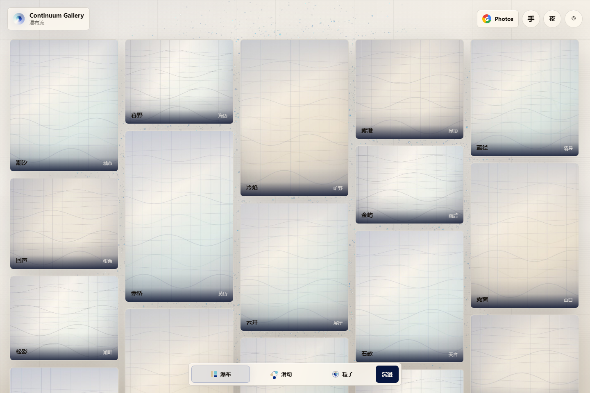
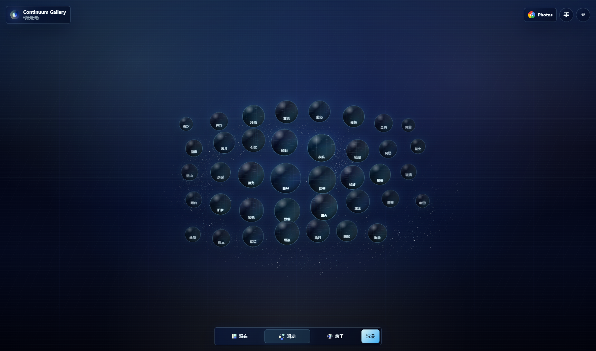

01
瀑布流
用于快速浏览全部影像，保留相册最基本的秩序感和扫描效率。
Open-source particle photo gallery · GitHub Pages
把照片变成一座安静发光的影像圣殿。瀑布流、球形滑动、粒子球态、Google Photos、手势操控， 以及日间暖纸与夜间深蓝两套主题，被收束成一个纯静态、可开源部署的沉浸式相册。
Visual system
粒子场不再只是贴在画面后面的装饰。它跟随预览球的滑动产生尾流、延迟和能量变化， 在日间主题里保持清晰蓝白发光，在夜间主题里回到原版深蓝宇宙场。


Three states
01
用于快速浏览全部影像，保留相册最基本的秩序感和扫描效率。
02
圆形预览图漂浮在整体粒子流场之上，拖拽时背景产生惯性尾流，而不是廉价贴图。
03
照片进入发光粒子球，蓝白光点组成神圣而克制的数字天体。
04
日间模式保留暖纸和克莱因蓝的高级感，夜间模式锁定原版深蓝科幻场域。
Interaction craft
每一次切换都会触发粒子形态过渡、照片布局重排和 UI 状态同步。主题切换会保留当前浏览形态； 手势触发时， MediaPipe 识别会在切换动画期间让出渲染预算，避免推理和粒子动画抢帧。